<title>Folding Stair Datasheet</title>
<link rel="preconnect" href="https://fonts.googleapis.com">
<link rel="stylesheet" href="https://fonts.googleapis.com/css2?family=Barlow+Semi+Condensed:wght@500;600;700&family=IBM+Plex+Mono:wght@400;500&family=IBM+Plex+Sans:wght@400;500;600&display=swap">
<style>
:root {
  --paper:#EFF2F2; --surface:#FFFFFF; --ink:#15202A; --ink2:#4B5966; --rule:#D3DADE; --soft:#E6EBED;
  --accent:#1E5A86; --accentbg:#E1ECF4;
  --pass:#2F7A4F; --passbg:#E2F1E7; --fail:#B42318; --failbg:#FBE3E0; --warn:#9A620E; --warnbg:#FBEFD8;
  --display:"Barlow Semi Condensed","Arial Narrow",system-ui,sans-serif;
  --body:"IBM Plex Sans",system-ui,-apple-system,"Segoe UI",sans-serif;
  --mono:"IBM Plex Mono",ui-monospace,"Cascadia Mono",Consolas,monospace;
}
@media (prefers-color-scheme: dark) {
  :root:not([data-theme="light"]) {
    --paper:#0E151B; --surface:#152029; --ink:#E3E9ED; --ink2:#9DACB8; --rule:#27353F; --soft:#1B2833;
    --accent:#7DB7E3; --accentbg:#16283A;
    --pass:#6CC790; --passbg:#17301F; --fail:#FF8C80; --failbg:#3A1B18; --warn:#E6B45A; --warnbg:#382B12; color-scheme:dark;
  }
}
:root[data-theme="dark"] {
  --paper:#0E151B; --surface:#152029; --ink:#E3E9ED; --ink2:#9DACB8; --rule:#27353F; --soft:#1B2833;
  --accent:#7DB7E3; --accentbg:#16283A;
  --pass:#6CC790; --passbg:#17301F; --fail:#FF8C80; --failbg:#3A1B18; --warn:#E6B45A; --warnbg:#382B12; color-scheme:dark;
}
* { box-sizing:border-box; }
body { background:var(--paper); color:var(--ink); font:15px/1.55 var(--body); margin:0; padding-inline:16px; padding-block:28px 64px; }
.sheet { max-width:1180px; margin:0 auto; display:grid; gap:34px; }
h1,h2,h3 { font-family:var(--display); letter-spacing:.01em; text-wrap:balance; margin:0; }
h1 { font-size:clamp(34px,5vw,54px); font-weight:700; line-height:1.02; }
h2 { font-size:26px; font-weight:600; }
p { margin:0; max-width:70ch; }
a { color:var(--accent); }
a:focus-visible { outline:2px solid var(--accent); outline-offset:2px; }
.mono { font-family:var(--mono); font-variant-numeric:tabular-nums; }
.dim { color:var(--ink2); }
.eyebrow { font:600 12px/1 var(--mono); letter-spacing:.12em; text-transform:uppercase; color:var(--accent); }
/* document control strip */
.control { display:grid; grid-template-columns:repeat(auto-fit,minmax(150px,1fr)); border:1px solid var(--rule); background:var(--surface); }
.control div { padding:10px 14px; border-right:1px solid var(--rule); display:grid; gap:3px; }
.control div:last-child { border-right:0; }
.control span { font:500 11px/1 var(--mono); letter-spacing:.08em; text-transform:uppercase; color:var(--ink2); }
.control b { font:500 13.5px/1.3 var(--mono); }
.control .status b { color:var(--fail); }
header.title { display:grid; gap:14px; }
header.title p { color:var(--ink2); font-size:16.5px; }
/* section frame: label column + content */
section { display:grid; grid-template-columns:210px 1fr; gap:10px 34px; border-top:2px solid var(--ink); padding-top:14px; }
section > .lab { display:grid; align-content:start; gap:6px; }
section > .lab p { color:var(--ink2); font-size:13.5px; }
section > .body { display:grid; gap:18px; min-width:0; }
@media (max-width: 860px) { section { grid-template-columns:1fr; } }
/* overview */
.hero { display:grid; grid-template-columns:minmax(0,1.55fr) minmax(0,1fr); gap:18px; align-items:start; }
.hero img { width:100%; height:auto; display:block; border:1px solid var(--rule); }
.figs { display:grid; grid-template-columns:1fr 1fr; border:1px solid var(--rule); background:var(--surface); }
.figs div { padding:12px 14px; border-bottom:1px solid var(--rule); display:grid; gap:2px; min-width:0; overflow-wrap:anywhere; }
.figs div:nth-child(odd) { border-right:1px solid var(--rule); }
.figs div:nth-last-child(-n+2) { border-bottom:0; }
.figs span { font-size:12.5px; color:var(--ink2); }
.figs b { font:600 25px/1.1 var(--display); font-variant-numeric:tabular-nums; }
.figs b small { font:500 13px var(--mono); color:var(--ink2); margin-left:3px; }
.figs .bad b { color:var(--fail); }
@media (max-width: 860px) { .hero { grid-template-columns:1fr; } }
/* configuration gallery */
.gallery { display:grid; grid-template-columns:repeat(auto-fill,minmax(250px,1fr)); gap:14px; }
.cfg { margin:0; background:var(--surface); border:1px solid var(--rule); display:grid; grid-template-rows:auto 1fr; }
.cfg img { width:100%; height:auto; aspect-ratio:16/10; object-fit:cover; display:block; border-bottom:1px solid var(--rule); }
.cfg figcaption { padding:10px 12px 12px; display:grid; gap:8px; }
.cfg-top { display:grid; gap:1px; }
.cfg-top b { font:600 17px/1.2 var(--display); }
.cfg-top span { font-size:12px; }
.kv { margin:0; display:grid; gap:3px; font-size:12.5px; }
.kv div { display:grid; grid-template-columns:78px 1fr; gap:8px; }
.kv dt { color:var(--ink2); }
.kv dd { margin:0; }
/* tables */
.tw { overflow-x:auto; border:1px solid var(--rule); background:var(--surface); }
table { border-collapse:collapse; width:100%; font-size:13.5px; }
th, td { padding:8px 12px; border-bottom:1px solid var(--rule); text-align:left; vertical-align:top; }
thead th { font:600 11.5px/1.2 var(--mono); letter-spacing:.06em; text-transform:uppercase; color:var(--ink2); background:var(--soft); white-space:nowrap; }
tbody tr:last-child th, tbody tr:last-child td { border-bottom:0; }
tbody th { font-weight:500; }
td.num, th.num { text-align:right; font-family:var(--mono); font-variant-numeric:tabular-nums; white-space:nowrap; }
td.ok { color:var(--pass); } td.bad { color:var(--fail); font-weight:500; }
td.strong { font-weight:600; }
td.unit { color:var(--ink2); font-family:var(--mono); font-size:12.5px; white-space:nowrap; }
td.req { color:var(--ink2); }
td.ref { color:var(--ink2); white-space:nowrap; }
.note { display:block; color:var(--ink2); font-size:12px; font-weight:400; margin-top:2px; }
.chip { display:inline-block; font:600 11px/1 var(--mono); letter-spacing:.05em; text-transform:uppercase; padding:4px 7px; border-radius:3px; white-space:nowrap; }
.chip.pass { color:var(--pass); background:var(--passbg); }
.chip.fail { color:var(--fail); background:var(--failbg); }
.chip.warn { color:var(--warn); background:var(--warnbg); }
.tally { display:flex; flex-wrap:wrap; gap:8px; align-items:center; font-size:13.5px; color:var(--ink2); }
/* mass */
.split { display:grid; grid-template-columns:1.2fr 1fr; gap:18px; align-items:start; }
@media (max-width: 860px) { .split { grid-template-columns:1fr; } }
.mass { background:var(--surface); border:1px solid var(--rule); padding:12px 14px; display:grid; gap:7px; font-size:13px; }
.mrow { display:grid; grid-template-columns:150px 1fr 48px; gap:10px; align-items:center; }
.mrow .bar { height:9px; background:var(--soft); }
.mrow .bar i { display:block; height:100%; background:var(--accent); }
.mrow .mono { text-align:right; }
.mtot { border-top:1px solid var(--rule); padding-top:7px; display:flex; justify-content:space-between; font-weight:600; }
.matl { background:var(--accentbg); border:1px solid var(--rule); padding:12px 14px; display:grid; gap:6px; font-size:13.5px; }
.matl b { font:600 17px var(--display); }
/* details */
.details { display:grid; grid-template-columns:repeat(auto-fill,minmax(320px,1fr)); gap:14px; }
.det { margin:0; background:var(--surface); border:1px solid var(--rule); }
.det img { width:100%; height:auto; display:block; border-bottom:1px solid var(--rule); }
.det figcaption { padding:10px 12px 12px; display:grid; gap:4px; font-size:13.5px; }
.det b { font:600 17px var(--display); }
.det p { color:var(--ink2); }
/* conditions */
.cond { margin:0; padding:0; list-style:none; display:grid; gap:8px; }
.cond li { padding:10px 14px; background:var(--surface); border:1px solid var(--rule); border-left:3px solid var(--fail); }
.cond li.info { border-left-color:var(--accent); }
.next { background:var(--surface); border:1px dashed var(--ink2); padding:14px 16px; display:grid; gap:6px; }
.next b { font:600 19px var(--display); }
footer { color:var(--ink2); font-size:12.5px; border-top:1px solid var(--rule); padding-top:12px; display:grid; gap:4px; }
</style>

<main class="sheet">
  <div class="control" role="group" aria-label="Document control">
    <div><span>Document</span><b>DS-FMS-ASIS</b></div>
    <div><span>Revision</span><b>A · 23 Sep 2026</b></div>
    <div><span>Source model</span><b>IFC 22-09-2026</b></div>
    <div><span>Material</span><b>EN AW-6082-T6</b></div>
    <div class="status"><span>Status</span><b>As-is · not rated for events</b></div>
  </div>

  <header class="title">
    <div class="eyebrow">Technical datasheet · current design as modelled</div>
    <h1>Folding modular stair unit</h1>
    <p>One aluminium unit that folds from a flat catwalk to a 35° stair or a 49.4° step by sliding its guide bars on the tread pins,
       and locks when the handrails drop in. Two units join end-to-end, or side-by-side with the right rails nested inside the neighbour’s left channels, for eleven configurations.
       All values below are for the design exactly as modelled, rated against the Aug-2026 events compliance sheet.</p>
  </header>

  <section id="overview">
    <div class="lab"><h2>Overview</h2><p>Per unit unless stated.</p></div>
    <div class="body">
      <div class="hero">
        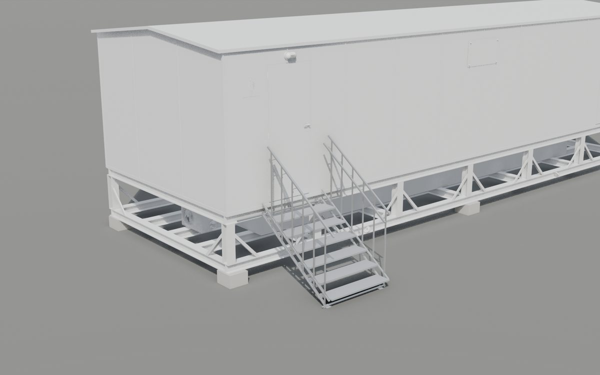
        <div class="figs">
          <div><span>Mass per unit</span><b>71.6<small>kg</small></b></div>
          <div><span>Configurations</span><b>11<small>from 1 or 2 units</small></b></div>
          <div><span>Unit width</span><b>1,305<small>mm outside</small></b></div>
          <div><span>Clear width</span><b>1,023<small>mm between handrails</small></b></div>
          <div><span>Treads</span><b>6<small>× 280 × 1,236</small></b></div>
          <div><span>Stair pitch</span><b>35°<small>/ 49.4° steep</small></b></div>
          <div class="bad"><span>Rated crowd load, standard stair</span><b>1.00<small>kN/m² (7.5 required)</small></b></div>
          <div class="bad"><span>Rated barrier line load</span><b>0.16<small>kN/m (3.0 required)</small></b></div>
        </div>
      </div>
    </div>
  </section>

  <section id="configurations">
    <div class="lab"><h2>Configurations</h2><p>Overall dimensions in mm, measured on the rig with handrails inserted. Height is ground to the top of the handrail.</p></div>
    <div class="body">
      <div class="gallery">
      <figure class="cfg">
        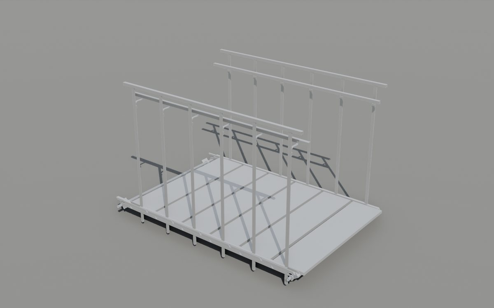
        <figcaption>
          <div class="cfg-top"><b>Catwalk</b><span class="mono dim">1 unit</span></div>
          <dl class="kv">
            <div><dt>L × W × H</dt><dd class="mono">1,977 × 1,305 × 1,261</dd></div>
            <div><dt>Pitch</dt><dd class="mono">0°</dd></div>
            <div><dt>Height</dt><dd class="mono">Deck +150</dd></div>
            <div><dt>Mass</dt><dd class="mono">71.6 kg</dd></div>
          </dl>
        </figcaption>
      </figure>
      <figure class="cfg">
        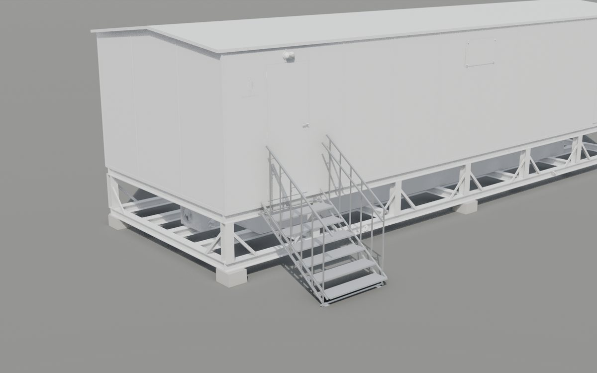
        <figcaption>
          <div class="cfg-top"><b>Standard stair</b><span class="mono dim">1 unit</span></div>
          <dl class="kv">
            <div><dt>L × W × H</dt><dd class="mono">1,670 × 1,305 × 2,218</dd></div>
            <div><dt>Pitch</dt><dd class="mono">35°</dd></div>
            <div><dt>Height</dt><dd class="mono">Top tread +1,050 · landing +1,225</dd></div>
            <div><dt>Mass</dt><dd class="mono">71.6 kg</dd></div>
          </dl>
        </figcaption>
      </figure>
      <figure class="cfg">
        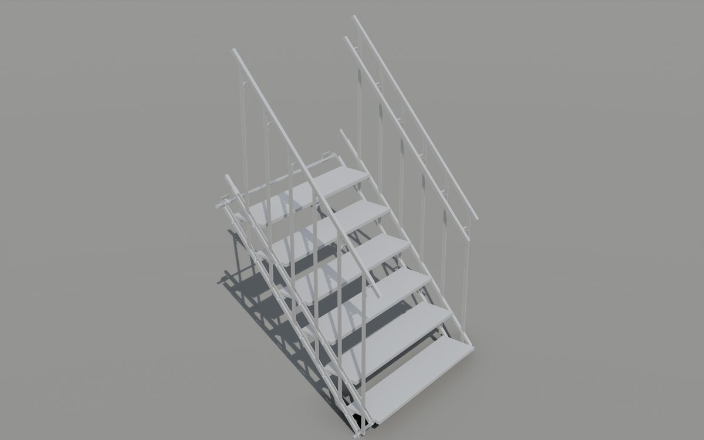
        <figcaption>
          <div class="cfg-top"><b>Steep steps</b><span class="mono dim">1 unit</span></div>
          <dl class="kv">
            <div><dt>L × W × H</dt><dd class="mono">1,401 × 1,305 × 2,553</dd></div>
            <div><dt>Pitch</dt><dd class="mono">49.4°</dd></div>
            <div><dt>Height</dt><dd class="mono">Top tread +1,369</dd></div>
            <div><dt>Mass</dt><dd class="mono">71.6 kg</dd></div>
          </dl>
        </figcaption>
      </figure>
      <figure class="cfg">
        
        <figcaption>
          <div class="cfg-top"><b>Stair hooked to cabin bar</b><span class="mono dim">1 unit</span></div>
          <dl class="kv">
            <div><dt>L × W × H</dt><dd class="mono">1,670 × 1,305 × 2,218</dd></div>
            <div><dt>Pitch</dt><dd class="mono">35°</dd></div>
            <div><dt>Height</dt><dd class="mono">Hooks on bar +1,072 · cabin sill +1,225</dd></div>
            <div><dt>Mass</dt><dd class="mono">71.6 kg</dd></div>
          </dl>
        </figcaption>
      </figure>
      <figure class="cfg">
        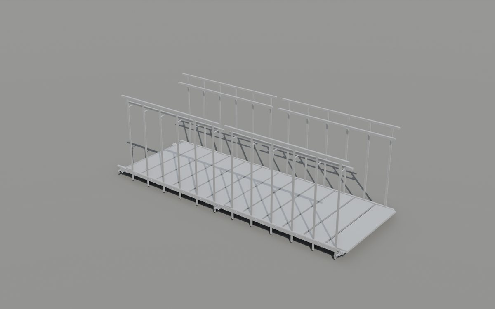
        <figcaption>
          <div class="cfg-top"><b>Double catwalk</b><span class="mono dim">2 units end-to-end</span></div>
          <dl class="kv">
            <div><dt>L × W × H</dt><dd class="mono">3,803 × 1,305 × 1,261</dd></div>
            <div><dt>Pitch</dt><dd class="mono">0°</dd></div>
            <div><dt>Height</dt><dd class="mono">Deck +150</dd></div>
            <div><dt>Mass</dt><dd class="mono">143.2 kg</dd></div>
          </dl>
        </figcaption>
      </figure>
      <figure class="cfg">
        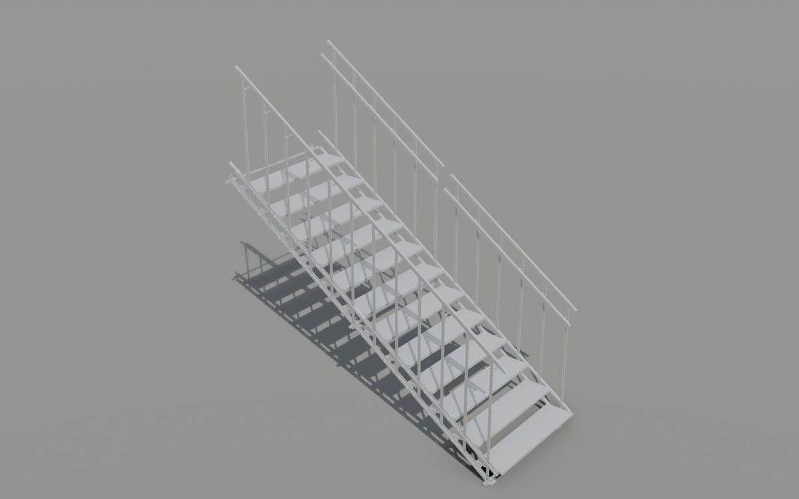
        <figcaption>
          <div class="cfg-top"><b>Double stair</b><span class="mono dim">2 units end-to-end</span></div>
          <dl class="kv">
            <div><dt>L × W × H</dt><dd class="mono">3,165 × 1,305 × 3,265</dd></div>
            <div><dt>Pitch</dt><dd class="mono">35°</dd></div>
            <div><dt>Height</dt><dd class="mono">Top tread +2,097</dd></div>
            <div><dt>Mass</dt><dd class="mono">143.2 kg</dd></div>
          </dl>
        </figcaption>
      </figure>
      <figure class="cfg">
        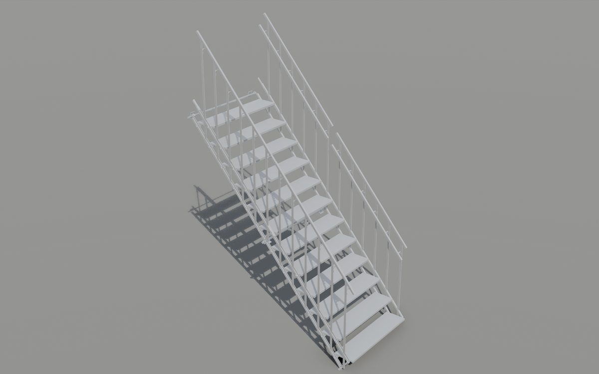
        <figcaption>
          <div class="cfg-top"><b>Double steep</b><span class="mono dim">2 units end-to-end</span></div>
          <dl class="kv">
            <div><dt>L × W × H</dt><dd class="mono">2,589 × 1,305 × 3,939</dd></div>
            <div><dt>Pitch</dt><dd class="mono">49.4°</dd></div>
            <div><dt>Height</dt><dd class="mono">Top tread +2,755</dd></div>
            <div><dt>Mass</dt><dd class="mono">143.2 kg</dd></div>
          </dl>
        </figcaption>
      </figure>
      <figure class="cfg">
        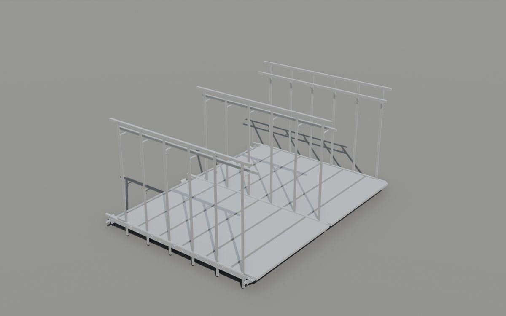
        <figcaption>
          <div class="cfg-top"><b>Wide catwalk · full handrail</b><span class="mono dim">2 units side-by-side, rails nested</span></div>
          <dl class="kv">
            <div><dt>L × W × H</dt><dd class="mono">1,977 × 2,546 × 1,261</dd></div>
            <div><dt>Pitch</dt><dd class="mono">0°</dd></div>
            <div><dt>Height</dt><dd class="mono">Deck +150</dd></div>
            <div><dt>Mass</dt><dd class="mono">133.1 kg</dd></div>
          </dl>
        </figcaption>
      </figure>
      <figure class="cfg">
        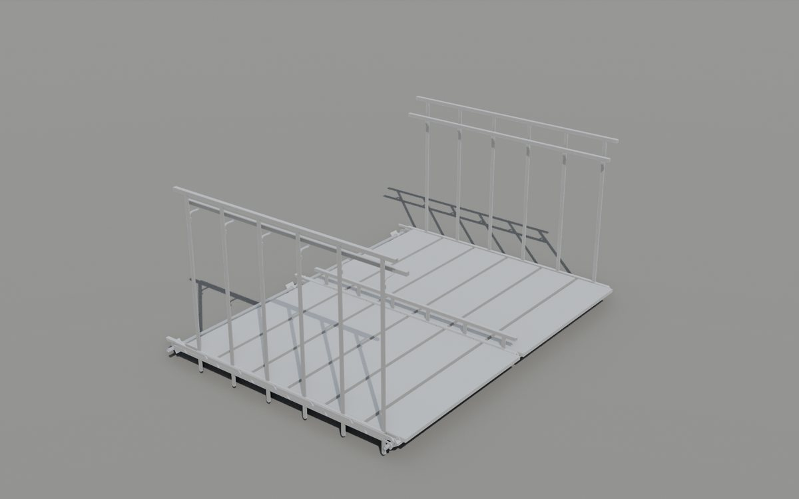
        <figcaption>
          <div class="cfg-top"><b>Wide catwalk · mini handrail</b><span class="mono dim">2 units side-by-side, rails nested</span></div>
          <dl class="kv">
            <div><dt>L × W × H</dt><dd class="mono">1,977 × 2,546 × 1,261</dd></div>
            <div><dt>Pitch</dt><dd class="mono">0°</dd></div>
            <div><dt>Height</dt><dd class="mono">Deck +150</dd></div>
            <div><dt>Mass</dt><dd class="mono">133.1 kg</dd></div>
          </dl>
        </figcaption>
      </figure>
      <figure class="cfg">
        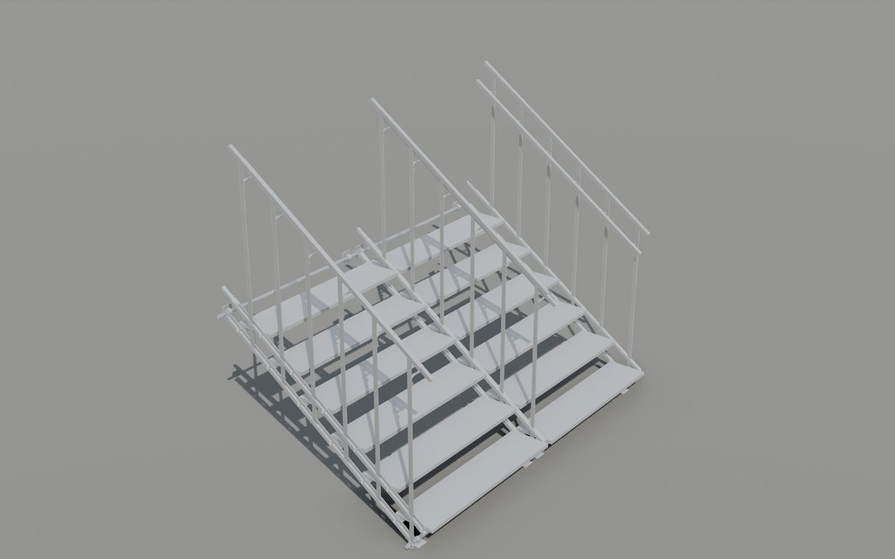
        <figcaption>
          <div class="cfg-top"><b>Wide stair</b><span class="mono dim">2 units side-by-side, rails nested</span></div>
          <dl class="kv">
            <div><dt>L × W × H</dt><dd class="mono">1,670 × 2,546 × 2,218</dd></div>
            <div><dt>Pitch</dt><dd class="mono">35°</dd></div>
            <div><dt>Height</dt><dd class="mono">Top tread +1,050 · landing +1,225</dd></div>
            <div><dt>Mass</dt><dd class="mono">133.1 kg</dd></div>
          </dl>
        </figcaption>
      </figure>
      <figure class="cfg">
        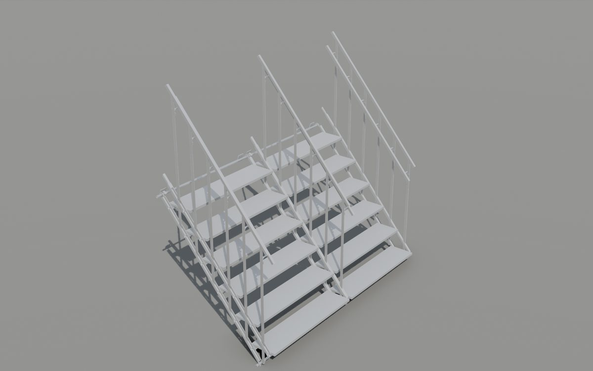
        <figcaption>
          <div class="cfg-top"><b>Wide steep</b><span class="mono dim">2 units side-by-side, rails nested</span></div>
          <dl class="kv">
            <div><dt>L × W × H</dt><dd class="mono">1,401 × 2,546 × 2,553</dd></div>
            <div><dt>Pitch</dt><dd class="mono">49.4°</dd></div>
            <div><dt>Height</dt><dd class="mono">Top tread +1,369</dd></div>
            <div><dt>Mass</dt><dd class="mono">133.1 kg</dd></div>
          </dl>
        </figcaption>
      </figure></div>
    </div>
  </section>

  <section id="ratings">
    <div class="lab"><h2>Load rating by configuration</h2><p>Largest characteristic uniformly distributed load (kN/m²) that keeps every member check ≤ 1.0. Double configurations assume a trestle under the joint.</p></div>
    <div class="body">
      <div class="tw"><table>
        <thead><tr><th>Configuration</th><th class="num">Strength</th><th class="num">Deflection L/250</th><th class="num">Rated UDL</th><th>Governs</th><th class="num">vs 7.5 kN/m²</th></tr></thead>
        <tbody>
        <tr><th scope="row">Catwalk</th>
          <td class="num">0.55</td><td class="num">0.14</td>
          <td class="num strong">0.14</td>
          <td>side girder SLS L/250</td><td class="num"><span class="chip fail">53.6× short</span></td></tr>
        <tr><th scope="row">Standard stair</th>
          <td class="num">1.00</td><td class="num">2.36</td>
          <td class="num strong">1.00</td>
          <td>side girder ULS</td><td class="num"><span class="chip fail">7.5× short</span></td></tr>
        <tr><th scope="row">Steep steps</th>
          <td class="num">1.93</td><td class="num">5.39</td>
          <td class="num strong">1.93</td>
          <td>side girder ULS</td><td class="num"><span class="chip fail">3.9× short</span></td></tr>
        <tr><th scope="row">Stair hooked to cabin bar</th>
          <td class="num">1.00</td><td class="num">2.36</td>
          <td class="num strong">1.00</td>
          <td>side girder ULS</td><td class="num"><span class="chip fail">7.5× short</span></td></tr>
        <tr><th scope="row">Double catwalk</th>
          <td class="num">0.55</td><td class="num">0.14</td>
          <td class="num strong">0.14</td>
          <td>side girder SLS L/250</td><td class="num"><span class="chip fail">53.6× short</span></td></tr>
        <tr><th scope="row">Double stair</th>
          <td class="num">1.00</td><td class="num">2.36</td>
          <td class="num strong">1.00</td>
          <td>side girder ULS</td><td class="num"><span class="chip fail">7.5× short</span></td></tr>
        <tr><th scope="row">Double steep</th>
          <td class="num">1.93</td><td class="num">5.39</td>
          <td class="num strong">1.93</td>
          <td>side girder ULS</td><td class="num"><span class="chip fail">3.9× short</span></td></tr>
        <tr><th scope="row">Wide catwalk · full handrail</th>
          <td class="num">0.55</td><td class="num">0.14</td>
          <td class="num strong">0.14</td>
          <td>side girder SLS L/250</td><td class="num"><span class="chip fail">53.6× short</span></td></tr>
        <tr><th scope="row">Wide catwalk · mini handrail</th>
          <td class="num">0.55</td><td class="num">0.14</td>
          <td class="num strong">0.14</td>
          <td>side girder SLS L/250</td><td class="num"><span class="chip fail">53.6× short</span></td></tr>
        <tr><th scope="row">Wide stair</th>
          <td class="num">1.00</td><td class="num">2.36</td>
          <td class="num strong">1.00</td>
          <td>side girder ULS</td><td class="num"><span class="chip fail">7.5× short</span></td></tr>
        <tr><th scope="row">Wide steep</th>
          <td class="num">1.93</td><td class="num">5.39</td>
          <td class="num strong">1.93</td>
          <td>side girder ULS</td><td class="num"><span class="chip fail">3.9× short</span></td></tr></tbody>
      </table></div>
    </div>
  </section>

  <section id="geometry">
    <div class="lab"><h2>Step geometry</h2><p>Rig law: tread pitch 305.2 mm along the frame in every state; frame span 1,831 mm axle to axle.</p></div>
    <div class="body">
      <div class="tw"><table>
        <thead><tr><th></th><th class="num">Catwalk 0°</th><th class="num">Standard 35°</th><th class="num">Steep 49.4°</th><th>Unit</th></tr></thead>
        <tbody>
          <tr><th scope="row">Rise per step</th><td class="num">—</td><td class="num">175</td><td class="num">232 (first 211)</td><td class="unit">mm</td></tr>
          <tr><th scope="row">Going</th><td class="num">305 (tread pitch)</td><td class="num">250</td><td class="num">199</td><td class="unit">mm</td></tr>
          <tr><th scope="row">2 × rise + going</th><td class="num">—</td><td class="num">600</td><td class="num">663</td><td class="unit">mm</td></tr>
          <tr><th scope="row">Deck / top tread above ground</th><td class="num">150</td><td class="num">1,050</td><td class="num">1,369</td><td class="unit">mm</td></tr>
          <tr><th scope="row">Landing level (one riser above top tread)</th><td class="num">—</td><td class="num">1,225</td><td class="num">1,601</td><td class="unit">mm</td></tr>
          <tr><th scope="row">Top rail above pitch line / deck</th><td class="num">1,111</td><td class="num">1,127</td><td class="num">1,162</td><td class="unit">mm</td></tr>
          <tr><th scope="row">Handrail above pitch line / deck</th><td class="num">1,000</td><td class="num">1,012</td><td class="num">1,018</td><td class="unit">mm</td></tr>
          <tr><th scope="row">Open riser gap</th><td class="num">—</td><td class="num">125</td><td class="num">182</td><td class="unit">mm</td></tr>
          <tr><th scope="row">Gap between treads</th><td class="num">25.2</td><td class="num">—</td><td class="num">—</td><td class="unit">mm</td></tr>
          <tr><th scope="row">Unit pitch: side-by-side / end-to-end</th><td class="num" colspan="3">1,241 nested / 1,825 along the slope</td><td class="unit">mm</td></tr>
        </tbody>
      </table></div>
    </div>
  </section>

  <section id="components">
    <div class="lab"><h2>Components &amp; material</h2><p>Sections measured from the CAD mesh; masses at 2,700 kg/m³.</p></div>
    <div class="body">
      <div class="tw"><table>
        <thead><tr><th>Component</th><th>Qty</th><th>Section as modelled</th><th class="num">A mm²</th><th class="num">I mm⁴</th></tr></thead>
        <tbody>
          <tr><th scope="row">Tread</th><td class="mono">6</td><td>Extruded plank 280 × 50, 1,236 long</td><td class="num">2,125</td><td class="num">566,862</td></tr>
          <tr><th scope="row">Guide bar, right upper / lower</th><td class="mono">1 + 1</td><td>25 wide (female plate side)</td><td class="num">275 / 275</td><td class="num">9,878 / 7,562</td></tr>
          <tr><th scope="row">Guide bar, left upper / lower</th><td class="mono">1 + 1</td><td>35 wide (male sandwich side)</td><td class="num">526 / 314</td><td class="num">24,959 / 16,156</td></tr>
          <tr><th scope="row">Axle</th><td class="mono">2</td><td>Tube Ø25.2 × 2.74, 1,305 long, 26 mm pin each side</td><td class="num">194</td><td class="num">12,438</td></tr>
          <tr><th scope="row">Handrail post</th><td class="mono">12</td><td>Flat 25 × 10, 1,000 long (weak axis carries barrier load)</td><td class="num">250</td><td class="num">2,089</td></tr>
          <tr><th scope="row">Top post / lock pin (mini)</th><td class="mono">12 + 12</td><td>Flat 25 × 10, 100 / ~165 long</td><td class="num">250</td><td class="num">2,089</td></tr>
          <tr><th scope="row">Guardrail</th><td class="mono">2</td><td>25 × 25 hollow, 1,726 long</td><td class="num">325</td><td class="num">26,887</td></tr>
          <tr><th scope="row">Handrail</th><td class="mono">2</td><td>25 × 25 solid, 1,726 long</td><td class="num">625</td><td class="num">32,544</td></tr>
          <tr><th scope="row">Top hook</th><td class="mono">1 per side</td><td>5 mm plate, 11.9 mm minimum throat</td><td class="num">—</td><td class="num">—</td></tr>
        </tbody>
      </table></div>
      <div class="split">
        <div class="mass"><div class="mrow"><span>Treads 6×</span><span class="bar"><i style="width:100.0%"></i></span><span class="mono">42.55</span></div><div class="mrow"><span>Handrail posts 12×</span><span class="bar"><i style="width:19.1%"></i></span><span class="mono">8.11</span></div><div class="mrow"><span>Guide bars 4×</span><span class="bar"><i style="width:16.0%"></i></span><span class="mono">6.82</span></div><div class="mrow"><span>Handrails 2×</span><span class="bar"><i style="width:13.7%"></i></span><span class="mono">5.82</span></div><div class="mrow"><span>Guardrails 2×</span><span class="bar"><i style="width:7.1%"></i></span><span class="mono">3.03</span></div><div class="mrow"><span>Axles 2×</span><span class="bar"><i style="width:3.2%"></i></span><span class="mono">1.36</span></div><div class="mrow"><span>Lock pins (minis) 12×</span><span class="bar"><i style="width:3.1%"></i></span><span class="mono">1.34</span></div><div class="mrow"><span>Rail brackets 12×</span><span class="bar"><i style="width:2.6%"></i></span><span class="mono">1.09</span></div><div class="mrow"><span>Top posts 12×</span><span class="bar"><i style="width:1.9%"></i></span><span class="mono">0.81</span></div><div class="mrow"><span>Hooks, connectors</span><span class="bar"><i style="width:1.6%"></i></span><span class="mono">0.69</span></div><div class="mtot"><span>Total per unit</span><span class="mono">71.6 kg</span></div></div>
        <div class="matl">
          <span class="eyebrow">Material, all parts</span>
          <b>Aluminium EN AW-6082-T6</b>
          <span class="mono">f0 260 MPa (t ≤ 5) · 250 MPa (t &gt; 5)<br>fu 310 / 290 MPa · E 70 GPa · G 27 GPa<br>ρ 2,700 kg/m³ · γM1 1.10 · α 23×10⁻⁶ /K</span>
          <span>Assigned to all 648 staircase elements in <span class="mono">final STEP LADDER 22-9-2026 - ALUMINIUM.ifc</span>, with property sets and a metal surface style.</span>
        </div>
      </div>
    </div>
  </section>

  <section id="performance">
    <div class="lab"><h2>Structural performance</h2><p>EN AW-6082-T6, EN 1990 factors 1.35G + 1.5Q, EN 1999-1-1. Values below the requirement are shown in red.</p></div>
    <div class="body">
      <div class="tw"><table>
        <thead><tr><th>Check</th><th class="num">Catwalk</th><th class="num">Standard</th><th class="num">Steep</th><th>Unit</th><th class="num">Required</th></tr></thead>
        <tbody><tr><th scope="row">Side girder strength rating (ULS)<span class="note">locked Vierendeel FE, 1.35G + 1.5Q, load patterns</span></th><td class="num bad">0.55</td><td class="num bad">1.00</td><td class="num bad">1.93</td><td class="unit">kN/m²</td><td class="num req">≥ 7.5</td></tr><tr><th scope="row">Side girder deflection rating (L/250)<span class="note">7.3 mm on the 1,831 mm span</span></th><td class="num bad">0.14</td><td class="num bad">2.36</td><td class="num bad">5.39</td><td class="unit">kN/m²</td><td class="num req">≥ 7.5</td></tr><tr><th scope="row">Girder deflection, one person 1 kN<span class="note"></span></th><td class="num bad">12.80</td><td class="num ok">2.60</td><td class="num ok">1.50</td><td class="unit">mm</td><td class="num req">≤ 10</td></tr><tr><th scope="row">Tread UDL rating<span class="note">280 × 50 plank on 1,241 mm span</span></th><td class="num ok">20.90</td><td class="num ok">25.51</td><td class="num ok">32.11</td><td class="unit">kN/m²</td><td class="num req">≥ 7.5</td></tr><tr><th scope="row">Tread point rating (200 × 200 patch)<span class="note"></span></th><td class="num ok">7.67</td><td class="num ok">7.67</td><td class="num ok">7.67</td><td class="unit">kN</td><td class="num req">≥ 4</td></tr><tr><th scope="row">Top hook capacity<span class="note">5 mm plate, 11.9 mm throat</span></th><td class="num dim">—</td><td class="num">1.36</td><td class="num">1.36</td><td class="unit">kN</td><td class="num req"></td></tr><tr><th scope="row">Top hook demand at 7.5 kN/m²<span class="note"></span></th><td class="num dim">—</td><td class="num">4.13</td><td class="num">2.70</td><td class="unit">kN</td><td class="num req"></td></tr><tr><th scope="row">Barrier line-load rating (top rail)<span class="note">12 posts 25 × 10 flat, weak axis</span></th><td class="num bad">0.20</td><td class="num bad">0.16</td><td class="num bad">0.15</td><td class="unit">kN/m</td><td class="num req">≥ 3</td></tr><tr><th scope="row">Post point-load rating (top)<span class="note"></span></th><td class="num bad">0.30</td><td class="num bad">0.24</td><td class="num bad">0.23</td><td class="unit">kN</td><td class="num req">≥ 1.5</td></tr><tr><th scope="row">Vertical natural frequency<span class="note">self weight, locked</span></th><td class="num ok">8.00</td><td class="num ok">18.00</td><td class="num dim">—</td><td class="unit">Hz</td><td class="num req">≥ 6</td></tr></tbody>
      </table></div>
      <p class="dim">Free-standing catwalk: overturning factor of safety 0.07 against 1.5, so it needs 1,499 kg of ballast or ground anchors. Axle shear capacity 13.2 kN per side; lock-pin shear capacity 32.8 kN.
      Hand calculation, FE and Blender rigid-body runs agree within 0.7 %.</p>
    </div>
  </section>

  <section id="compliance">
    <div class="lab"><h2>Compliance, Aug-2026 events sheet</h2><p>R-numbers are rows of the sheet.</p></div>
    <div class="body">
      <div class="tally"><span class="chip fail">14 fail</span> <span class="chip warn">10 partial or to specify</span> <span class="chip pass">9 pass</span></div>
      <h3>Loads</h3>
      <div class="tw"><table>
        <thead><tr><th>Ref</th><th>Requirement</th><th>As-is</th><th>Result</th></tr></thead>
        <tbody><tr><td class="mono ref">R113</td><td>Crowd UDL 7.5 kN/m² on stairs and platforms</td><td class="mono">0.55 / 1.00 / 1.93 kN/m²</td><td><span class="chip fail">Fail</span></td></tr><tr><td class="mono ref">R114</td><td>Tread point load 4.0 kN on 200 × 200</td><td class="mono">7.67 kN</td><td><span class="chip pass">Pass</span></td></tr><tr><td class="mono ref">R115</td><td>Deflection ≤ L/250 under crowd</td><td class="mono">catwalk 0.14, stair 2.36 kN/m² before L/250</td><td><span class="chip fail">Fail</span></td></tr><tr><td class="mono ref">R115</td><td>&lt; 10 mm under a single person</td><td class="mono">catwalk 12.8 mm, stair 2.6 mm</td><td><span class="chip warn">Partial</span></td></tr><tr><td class="mono ref">R142</td><td>Barrier line load 3.0 kN/m</td><td class="mono">0.16 kN/m</td><td><span class="chip fail">Fail</span></td></tr><tr><td class="mono ref">R179</td><td>Post point load 1.5 kN</td><td class="mono">0.24 kN</td><td><span class="chip fail">Fail</span></td></tr><tr><td class="mono ref">R178</td><td>Top rail vertical 1.0 kN/m</td><td class="mono">25 × 25 rail over 305 mm post spacing</td><td><span class="chip pass">Pass</span></td></tr><tr><td class="mono ref">R177</td><td>Vertical f₁ ≥ 6 Hz</td><td class="mono">8.0 Hz catwalk, 18.0 Hz stair</td><td><span class="chip pass">Pass</span></td></tr><tr><td class="mono ref">R40</td><td>Overturning FoS ≥ 1.5 (free-standing catwalk)</td><td class="mono">FoS 0.07 → 1,499 kg ballast or anchors</td><td><span class="chip fail">Fail</span></td></tr><tr><td class="mono ref">R61</td><td>Top hook, stair on bar or double joint</td><td class="mono">1.36 kN vs 4.13 kN</td><td><span class="chip fail">Fail</span></td></tr><tr><td class="mono ref">R51</td><td>End-to-end joint</td><td class="mono">hooks cannot carry the joint moment</td><td><span class="chip fail">Trestle</span></td></tr><tr><td class="mono ref">—</td><td>Unlocked frame (handrails out)</td><td class="mono">parallelogram mechanism</td><td><span class="chip warn">Lock first</span></td></tr></tbody>
      </table></div>
      <h3>Geometry and detailing</h3>
      <div class="tw"><table>
        <thead><tr><th>Ref</th><th>Requirement</th><th>As drawn</th><th>Result</th></tr></thead>
        <tbody><tr><td class="mono ref">R9</td><td>Stair pitch &lt;= 35 deg</td><td class="mono">35.0 / 49.4 deg</td><td><span class="chip warn">Partial</span><span class="note">standard PASS (at limit) / steep FAIL - crew step-ladder only</span></td></tr><tr><td class="mono ref">R4</td><td>Going &gt;= 250 (riser &lt;= 175)</td><td class="mono">250 / 199 mm</td><td><span class="chip warn">Partial</span><span class="note">standard PASS (at limit) / steep FAIL</span></td></tr><tr><td class="mono ref">R5</td><td>Riser 100-200 (rec 170); riser &lt;= going x tan35</td><td class="mono">175 / 232 mm</td><td><span class="chip warn">Partial</span><span class="note">standard PASS (5 mm over the 170 rec) / steep FAIL</span></td></tr><tr><td class="mono ref">R8</td><td>2h + g 540-660 (design aid)</td><td class="mono">600 / 662 mm</td><td><span class="chip warn">Partial</span><span class="note">standard PASS / steep FAIL (663)</span></td></tr><tr><td class="mono ref">R12</td><td>Uniform risers</td><td class="mono">standard 175 all / steep first 211 vs 232</td><td><span class="chip warn">Partial</span><span class="note">standard PASS / steep FAIL</span></td></tr><tr><td class="mono ref">R7</td><td>Open riser gap &lt;= 120 max / 100 rec</td><td class="mono">125 mm (175 rise - 50 tread)</td><td><span class="chip fail">Fail</span><span class="note">FAIL - close with a 50 mm nosing lip or riser plate</span></td></tr><tr><td class="mono ref">R48</td><td>Deck gap &lt;= 25 (catwalk)</td><td class="mono">25.2 mm</td><td><span class="chip fail">Fail</span><span class="note">FAIL by 0.2 mm - tread depth 285</span></td></tr><tr><td class="mono ref">R3</td><td>Clear width &gt;= 1100 (industry anchor, flow calc)</td><td class="mono">1023 between handrails / 1211 between rails</td><td><span class="chip fail">Fail</span><span class="note">BELOW anchor for a single unit; wide config PASS - confirm by flow calc</span></td></tr><tr><td class="mono ref">R63</td><td>Top rail &gt;= 1100 above pitch line</td><td class="mono">1111 / 1127 / 1162</td><td><span class="chip pass">Pass</span><span class="note">PASS</span></td></tr><tr><td class="mono ref">R64</td><td>Grip 25-50 (40 target)</td><td class="mono">25x25 square bars</td><td><span class="chip pass">Pass</span><span class="note">PASS range, not round - specify CHS 40</span></td></tr><tr><td class="mono ref">R65/R68</td><td>No gap &gt; 470 in side protection</td><td class="mono">about 1000 mm tread-to-handrail</td><td><span class="chip fail">Fail</span><span class="note">FAIL - add intermediate rail</span></td></tr><tr><td class="mono ref">R66</td><td>Toe board 150 (event)</td><td class="mono">none</td><td><span class="chip fail">Fail</span><span class="note">FAIL - add 150 mm toe board</span></td></tr><tr><td class="mono ref">R70</td><td>Lower child rail ~600 (event)</td><td class="mono">none</td><td><span class="chip fail">Fail</span><span class="note">FAIL - intermediate rail at ~575 mm serves both</span></td></tr><tr><td class="mono ref">R19</td><td>Handrail extension &gt;= 300 past top/bottom nosing</td><td class="mono">~80 mm</td><td><span class="chip fail">Fail</span><span class="note">FAIL - extend handrail (stair variant only)</span></td></tr><tr><td class="mono ref">R18/R109</td><td>Centre handrail if &gt; 28 deg and &gt; 1800 wide</td><td class="mono">wide stair 2.54 m at 35 deg</td><td><span class="chip pass">Pass</span><span class="note">PASS only with the inner handrail FULL (not mini) on wide stairs</span></td></tr><tr><td class="mono ref">R103</td><td>Module join gap &lt;= 25 / lip &lt;= 4</td><td class="mono">wide join 5 mm (right rails nest in left channels); double join 19 mm</td><td><span class="chip pass">Pass</span><span class="note">PASS - wide and double</span></td></tr><tr><td class="mono ref">R104</td><td>Positive captive locking</td><td class="mono">lock pins (bottom minis) loose</td><td><span class="chip warn">Specify</span><span class="note">specify captive (lanyard / spring detent)</span></td></tr><tr><td class="mono ref">R16/R94</td><td>Slip PTV &gt;= 36 wet (40 event)</td><td class="mono">not specified</td><td><span class="chip warn">Specify</span><span class="note">specify serrated top, PTV &gt;= 40 test</span></td></tr><tr><td class="mono ref">R17</td><td>55 mm contrasting nosings</td><td class="mono">none</td><td><span class="chip warn">Specify</span><span class="note">specify contrasting nosing insert</span></td></tr><tr><td class="mono ref">R106</td><td>Post spacing &lt;= 2.5 m</td><td class="mono">305 mm</td><td><span class="chip pass">Pass</span><span class="note">PASS</span></td></tr><tr><td class="mono ref">R54</td><td>Free-standing height:base &lt;= 3:1</td><td class="mono">0.7:1 standard</td><td><span class="chip pass">Pass</span><span class="note">PASS</span></td></tr></tbody>
      </table></div>
    </div>
  </section>

  <section id="connections">
    <div class="lab"><h2>Connections &amp; locking</h2><p>Close-ups from the storyline animation.</p></div>
    <div class="body"><div class="details">
      <figure class="det">
        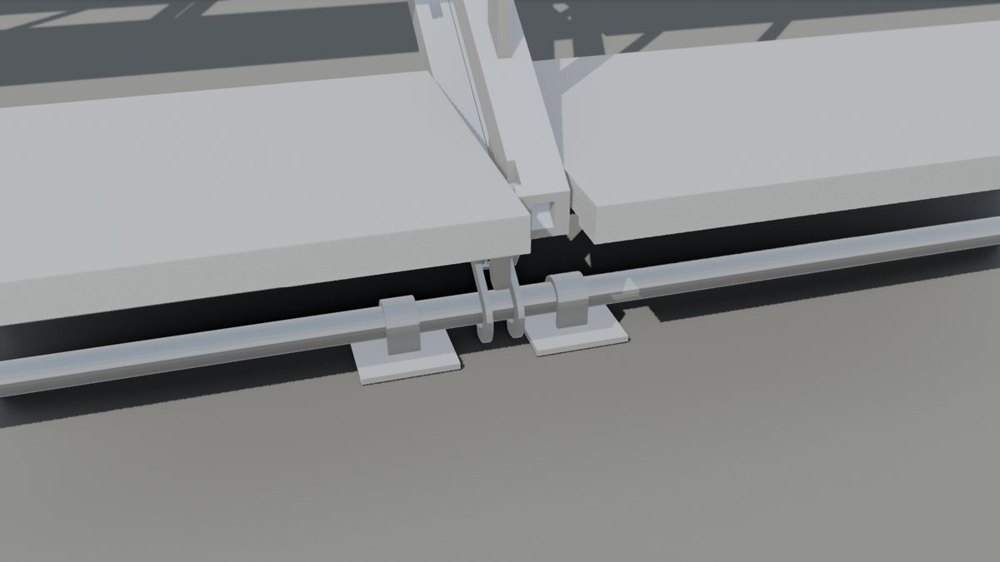
        <figcaption><b>Locking</b><p>The guide bars and treads form a parallelogram that folds freely. Dropping the handrail in pushes its bottom minis through both guide bars; from then on each side acts as a locked Vierendeel girder. Unlocked, it is a mechanism: handrails go in before anyone steps on.</p></figcaption>
      </figure>
      <figure class="det">
        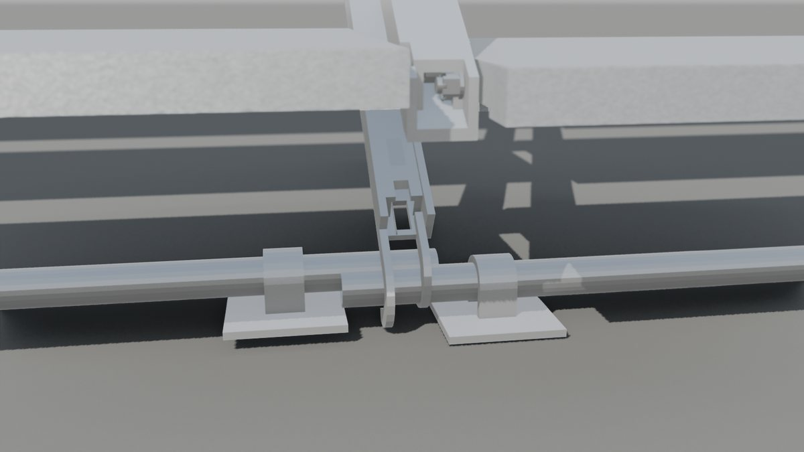
        <figcaption><b>Side-by-side join: nested rails</b><p>The left guide rails are 35 mm U-channels (5 mm walls, 25 mm slot, open at the top and both ends); the right rails are 25 mm inverted channels. Unit B slides lengthwise until its right rails sit inside unit A&#x27;s left channels, a zero-clearance fit. One handrail then drops its lock pins through both nested rails and locks the two units together. Pitch 1,241 mm; tread ends 5 mm apart over the join. As modelled, both units&#x27; axle tubes run into the join and overlap by 64 mm: one must stop short, or act as a pin in the other&#x27;s bore (to confirm on the drawings).</p></figcaption>
      </figure>
      <figure class="det">
        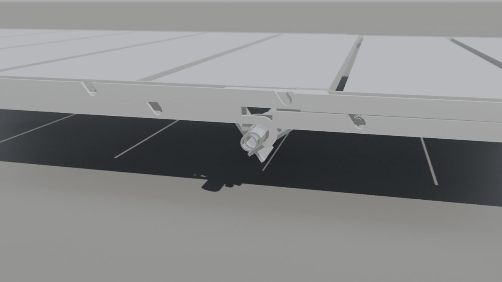
        <figcaption><b>End-to-end join</b><p>The lower guide plates of the upper unit hook over the top axle of the lower unit. Pitch 1,825 mm along the slope. The hooks cannot carry the joint moment: a trestle under every joint is required.</p></figcaption>
      </figure>
      <figure class="det">
        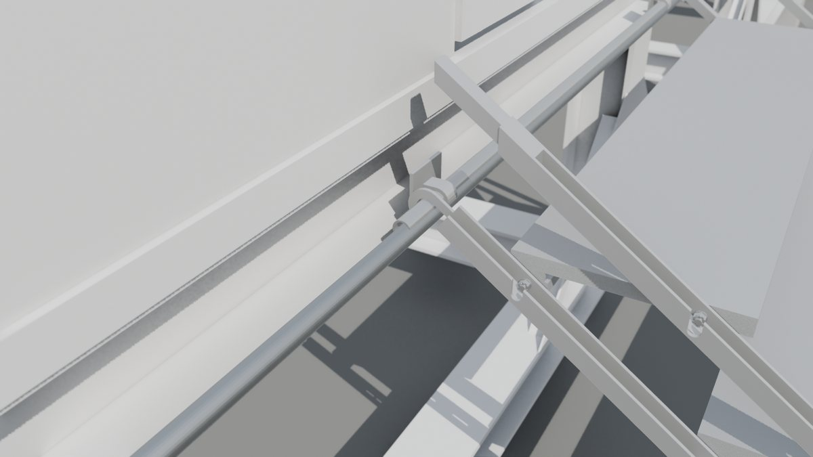
        <figcaption><b>Hooked to a cabin</b><p>In the bar configuration the top axle position hooks onto a fixed bar below the door sill. Landing = sill = +1,225 mm, one riser above the top tread. Shown on the toilet cabin from the IFC, packed 218 mm.</p></figcaption>
      </figure>
      <figure class="det">
        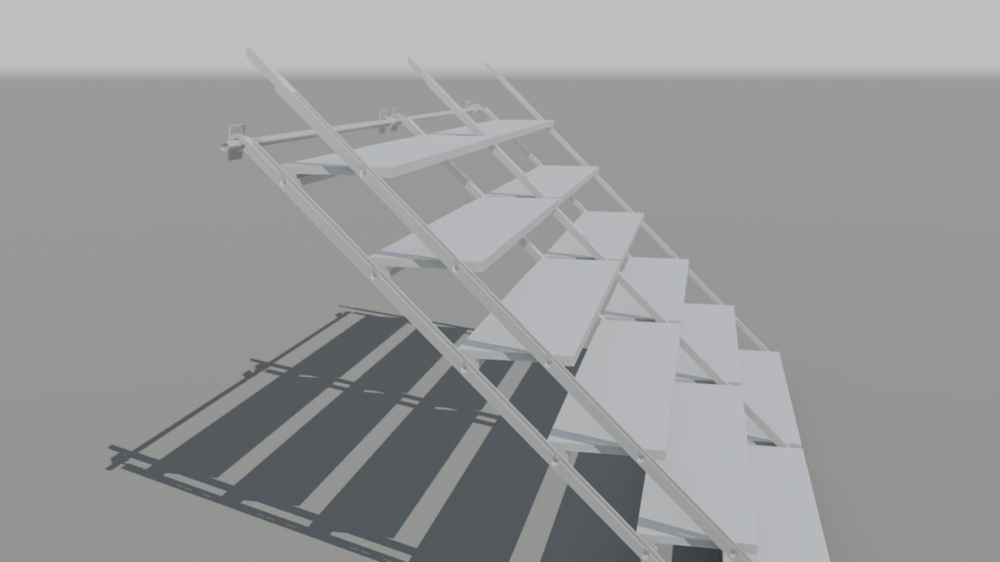
        <figcaption><b>Folding</b><p>Changing state slides the guide bars along the tread pins (123 mm at catwalk → 177 mm at steep); tread pitch along the frame stays 305.2 mm in every state.</p></figcaption>
      </figure>
      <figure class="det">
        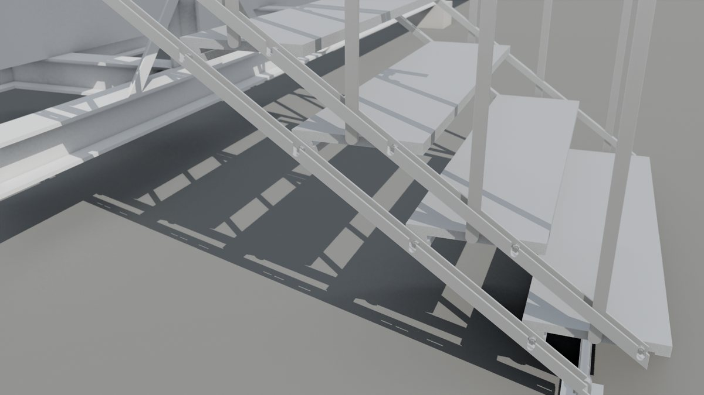
        <figcaption><b>Handrail removal</b><p>Lifting the handrail pulls the minis out of the guide bars (first 150 mm), which frees the steps to fold. Top posts pivot on the guardrail so the poles stay plumb in every state.</p></figcaption>
      </figure></div></div>
  </section>

  <section id="use">
    <div class="lab"><h2>Conditions of use</h2></div>
    <div class="body">
      <ul class="cond">
        <li>Not rated for public event use in any configuration. Its capacities are calculated, not type-tested, and fall well short of the Aug-2026 sheet.</li>
        <li>Insert the handrails, with every lock pin seated, before any load. With the handrails out the frame is a mechanism.</li>
        <li>Nobody may lean on or load the barriers: the top rail is rated at 0.16 kN/m against 3.0 required.</li>
        <li>Free-standing catwalks must be ballasted or anchored; double configurations need a trestle under the joint.</li>
        <li>Steep (49.4°) is a crew step-ladder only: pitch, going and riser are outside public stair limits.</li>
        <li class="info">A verified lightweight all-aluminium upgrade (69.4 kg, passes every Aug-2026 check) is set out part by part in the <a href="https://claude.ai/artifact/1ZGWmdUZyFepc1gGMdCkok">load verdict report</a>.</li>
      </ul>
      <div class="next">
        <span class="eyebrow">Next issue</span>
        <b>DS-FMS-FINAL · final design</b>
        <p>Issued after the final design has been load-tested, in this same layout so the two sheets compare line by line.</p>
      </div>
    </div>
  </section>

  <footer>
    <span>Basis: v2/datasheet/asis_ratings.py (FE + hand calculation, same functions as the load test), measured sections from the rig, Aug-2026 events sheet (v2/spec/sheet_2026-09-23_events.txt).</span>
    <span>Model: STEP LADDER RIGGED3.blend · IFC: final STEP LADDER 22-9-2026 - ALUMINIUM.ifc · Load test: <a href="https://claude.ai/artifact/1ZGWmdUZyFepc1gGMdCkok">Step Ladder Load Verdict</a>.</span>
  </footer>
</main>
